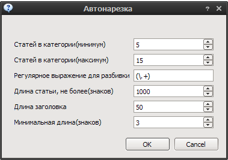
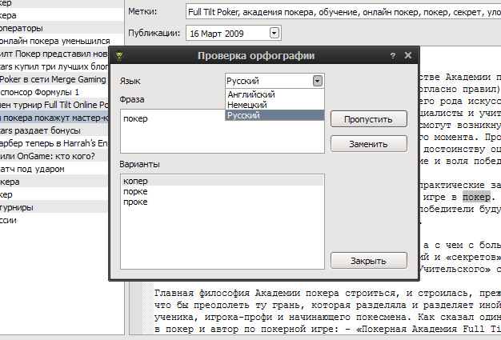

Статья¶
Обработка одной статьи
Добавить вступление¶
Добавляет вступление к статье. Если выбран текст, то копирует его в поле вступления.
Разделить на две¶
Разделяет статью на две по позиции курсора. В качестве заголовка второй статьи берется предложение(до точки) от позиции курсора.
Автонарезка¶
Нарезка текущей статьи на категории/статьи.
Количество статей в категории выбирается случайно из заданного промежутка для каждой категории отдельно. Разбивка, по умолчанию, идет по предложениям(см. регулярное выражение). Название категории - соответствует названию первой статьи.
Проверка орфографии¶
Проводит проверку орфографии в текущем окне редактора.
Доступны следующие языки:
- Русский
- Английский
- Немецкий
Вставка HTML тегов¶
Добавляет вокруг выделенного текста указанный тег.
- Bold
- Italic
- Underline
- Strong
- Emphasis
- Link
- Image
- Unordered List
- List element
- Paragraph
- Break line
Рерайтер¶
Рерайтер текста.

Содержит базу русской морфологии и тезаурус.
Примечание
Процесс определения формы слова довольно нетривиален, поэтому возможны ошибки при генерации по тезаурусу. В этом случае исправьте термин вручную.
- Статья
- Статья - страница